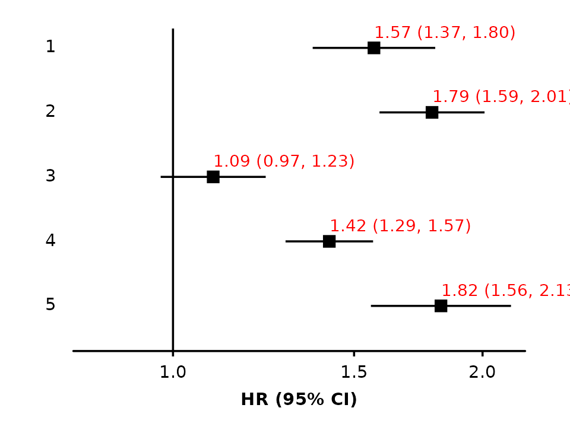
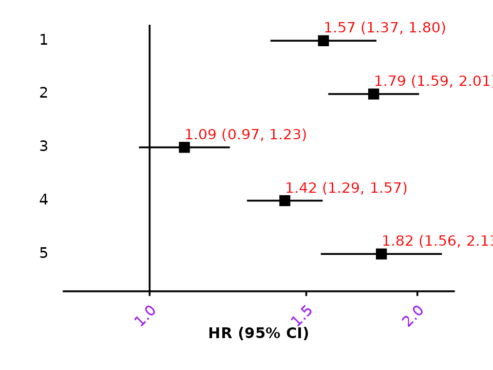
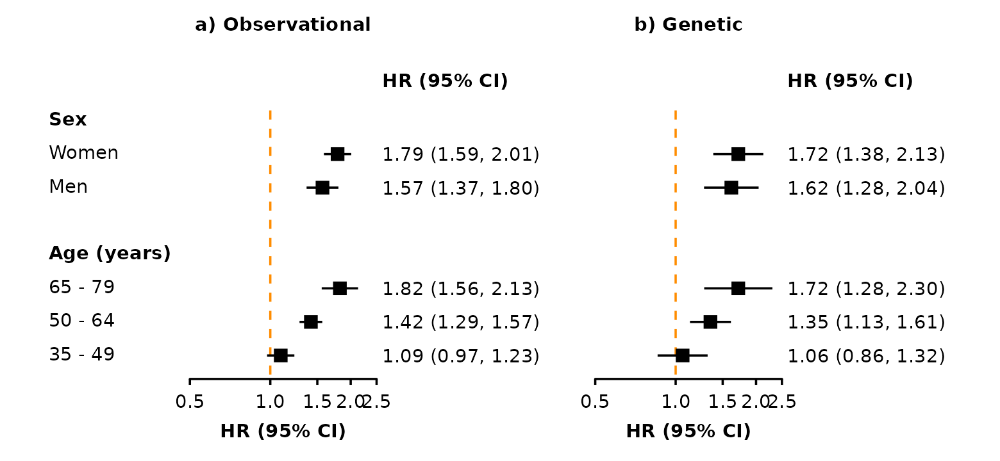

Arguments
In shape_plot() and forest_plot() use
base_size to set the base font and line size (default:
11pts) and use base_line_size to separately set the base
thickness of lines (default: base_size/22).
In forest_plot() use plotcolour to change
the colour for all parts of the plot. In shape_plot() use
plotcolour to change the colour for non-data aspects of the
plot.
In shape_plot() and forest_plot() several
arguments can be used to change visual properties for parts of the plot.
These can be names of columns in your data or single values. In
shape_plot() use:
| argument | controls | type |
|---|---|---|
| shape | plotting character for points | integer |
| colour | colour of points | character |
| cicolour | colour of CI lines | character |
| fill | fill colour of points | character |
| ciunder | if the CI line should be plotted before the point | logical |
In forest_plot() use:
| argument | controls | type |
|---|---|---|
| shape | plotting character for points | integer |
| colour | colour of points and lines | character |
| fill | fill colour of points | character |
| ciunder | if the CI line should be plotted before the point | logical |
| col.bold | if text is bold | logical |
| col.diamond | if a diamond should be plotted | logical |
Note that col.bold, and col.diamond must be
column names in the supplied data frames, while the others can be fixed
values or column names. For diamonds, alternatively provide a character
vector of keys in the diamond argument.
For fill to have any effect, the shape will need to be a
shape with fill e.g. "square filled".
Adding to the ggplot
In forest_plot() and shape_plot() you can
add additional ggplot objects to the plot with the add
argument. The argument should be a named list, where the name
start is an object to be included in the ggplot immediately
after ggplot() (i.e. before anything else is added to the
ggplot) and the name end will add to the end.
This argument can be used, for example, to add additional geoms to the plot:
hr_geom <- geom_text(aes(label = auto_estcolumn),
size = 3,
hjust = 0,
nudge_y = 0.25,
colour = "red")
forest_plot(my_results,
estcolumn = FALSE,
add = list(start = hr_geom))
Or to use theme to customise the plot:
my_theme <- theme(axis.text.x = element_text(colour = "purple",
angle = 45,
hjust = 1))
forest_plot(my_results,
add = list(end = my_theme))To add multiple objects, use a list:
my_parts <- list(hr_geom,
my_theme)
forest_plot(my_results,
estcolumn = FALSE,
add = list(end = my_parts))
Adding aesthetics and arguments
The addaes and addarg arguments in shape_plot() and
forest_plot() can be used to add additional aesthetics and
arguments code to the ggplot layers created by the functions. These
arguments must be named lists of character strings, and the names of
elements defines where the aesthetics/arguments code is added.
In shape_plot() the following names will add aesthetics
and arguments to layers:
| name | layer that plots |
|---|---|
| lines | lines of linear fit through estimates |
| estimates.points | point estimates |
| estimates.text | text of estimates |
| n.text | text of number of events (n) |
| ci | confidence intervals |
| theme | theme |
In forest_plot() the following names will add aesthetics
and arguments to layers:
| name | layer that plots |
|---|---|
| ci | confidence intervals |
| points | point estimates |
| diamonds | diamonds |
| col.right/col.left | col.right/col.left columns |
| heading.right/heading.left | col.right/col.left column headings |
| xlab | x-axis label |
| panel.headings | headings above panels |
| nullline | line at null |
| addtext | ‘addtext’ text |
| theme | theme |
Where duplicate aesthetics/arguments might be defined and created, they are kept with the priority:
- Aesthetic arguments specified using addaes and addarg
- Aesthetic arguments created by the function
- Other arguments specified using addaes and addarg
- Other arguments created by the function
This can be used to ‘overwrite’ some of the code that would otherwise
be produced by shape_plot() and
forest_plot().
For example, adjusting the position and appearance of panel headings:
forest_plot(list("a) Observational" = my_resultsA,
"b) Genetic" = my_resultsB),
col.key = "subgroup",
row.labels = row_labels,
addaes = list(panel.headings = "x = 0.5"),
addarg = list(panel.headings = c("size = 4.5",
"colour = 'navyblue'",
"hjust = 0")))
Changing the appearance of the line at the ‘null’:
forest_plot(list("a) Observational" = my_resultsA,
"b) Genetic" = my_resultsB),
col.key = "subgroup",
row.labels = row_labels,
addarg = list(nullline = c("linetype = 'dashed'",
"colour = 'darkorange'")))
Replacing parts of the plot
The add argument can also be used to replace parts of
the plot.
In shape_plot() the following names will replace parts
of the plot:
| name | what code is replaced |
|---|---|
| scale.x | x-axis scale |
| scale.y | y-axis scale |
| scale.radius | scale for point size |
| scale.shape | scale for shape |
| scale.colour | scale for colour |
| scale.fill | scale for fill |
| estimates.points | point estimates |
| estimates.text | estimates text |
| n.text | text below points |
| ci.before | confidence interval lines (before the point estimates) |
| ci.after | confidence interval lines (after the point estimates) |
| arrows | arrows |
| ckb.style | CKB plot style |
| theme | plot theme |
In forest_plot() the following names will replace parts
of the plot:
| name | what code is replaced |
|---|---|
| coord | the coordinate system |
| facet | the facetting (facet_wrap()) |
| scale.x | x-axis scale |
| scale.y | y-axis scale |
| scale.radius | scale for point size |
| scale.shape | scale for shape |
| scale.colour | scale for colour |
| scale.fill | scale for fill |
| points | point estimates |
| nullline | line a null value |
| diamonds | diamonds |
| ci.before | confidence interval lines (before the point estimates) |
| ci.after | confidence interval lines (after the point estimates) |
| arrows | arrows |
| xlab | x-axis label |
| panel.headings | panel headings |
| panel.size | panel sizing |
| theme | plot theme |
The data.function argument
Use the data.function argument in
forest_plot() to change the plot data immediately before
plotting.
For example, you can tweak the text in the generated estimates column:
my_func <- function(dfr){
dfr$auto_estcolumn <- sub("\\(", "[", dfr$auto_estcolumn)
dfr$auto_estcolumn <- sub("\\)", "]", dfr$auto_estcolumn)
return(dfr)
}
forest_plot(my_results,
data.function = "my_func")